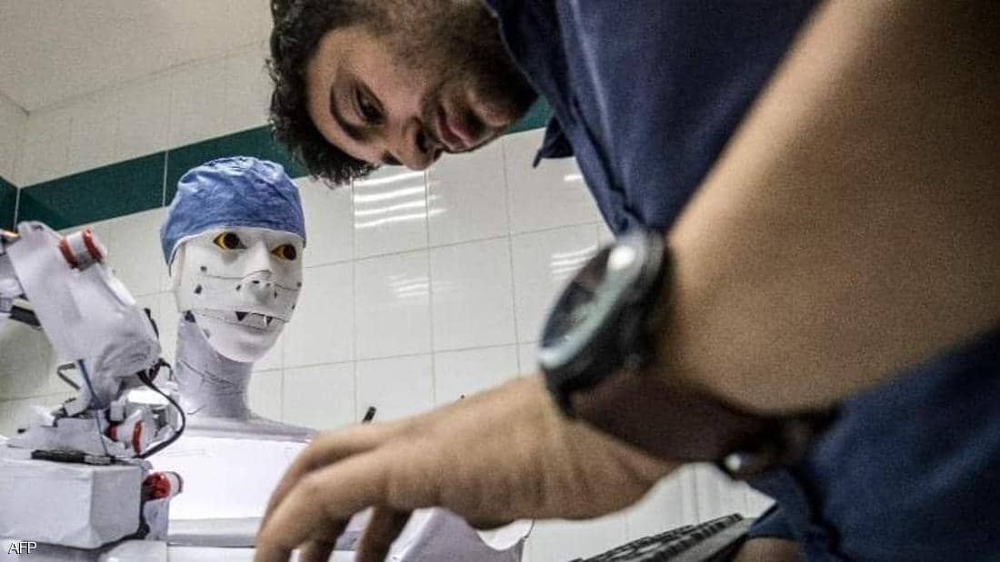

الأثنين
28 من رمضان 1442 هــ 10 مايو 2021
29℃ القاهرة, مصر
بيانات الطالب
| مصر | العالم | تكنولوجيا | رياضة | كاريكاتير |
"كيرا".. روبوت من اختراع مصري يؤدي مهاما طبية "متقدمة"

تمكن مهندس مصري من اختراع روبوت طبي قادر على التعامل
مع الأمراض وتشخيصها وسحب العينات من المرضى بما فيها المسحة الخاصة بفيروس كورونا،
وهو ما قاده إلى نيل تتويج دولي في سويسرا.
ويستطيع الروبوت قياس الوظائف الحيوية للمرضى، فضلا عن إجراء الأشعة الطبية لهم
وكتابة التقارير الخاصة بها، فحصل المخترع على الميدالية الفضية وجائزة معرض جنيف
الدولي للاختراعات في عام 2021.
وأطلق محمود الكومي، اسم "كيرا" على هذا الإنسان الآلي، قائلا إنه أول روبوت في
العالم قادر على سحب المسحات الخاصة بفيروس كورونا عن طريق تكنولوجيا الذكاء
الاصطناعي.
يقول الكومي لسكاي نيوز عربية "وجدت أن عملية تشخيص حالة المريض وإجراء الأشعة
والتحاليل تستغرق وقتا، وفي بعض الحالات هذا الوقت اللازم للوصول إلى التشخيص
السليم قبل كتابة العلاج قد يؤدي لتأخر حالة المريض وتدهورها، وبناء على ذلك ابتكرت
روبوتا يوفر الوقت والجهد ويقوم بهذه العمليات بسرعة وكفاءة".
ويضيف الكومي"الفكرة تقوم على إنتاج عدد من الروبوتات في مصر ودول العالم تكون من
نفس النوع ويمكن تعليمها بواسطة التعلم العميق، بشكل يشبه الخبرة التي يكتسبها
الطبيب البشري، حيث يحصل الروبوت على الخبرة من خلال التجربة والخطأ وتصحيح الخطأ،
وبعد ذلك يقوم بأخذ الخبرة من كل مريض وكل حالة حسب مستواها ويتم الحصول على
المعلومات وربطها بباقي الروبوتات بشبكة واحدة".
ويشرح المهندس المصري أن "المعلومة التي يحصل عليها الروبوت تكون عند باقي
الروبوتات في العالم كله، ومع زيادة حجم المعلومات عند كل روبوت يصبح من السهل
مقارنة الحالة التي أمامه بالمعلومات التي لديه ويتم مقارنتها بالحالات المخزنة
لديه ثم تقديم التشخيص السليم لحالة المريض".
ويشير الكومي إلى أن "الروبوت يستطيع التعامل في الوقت الحالي مع قرابة 85 مرض،
منها العائلة السرطانية بالكامل، ويتوسع في المعلومات مع مرور الوقت ليزداد عدد
الأمراض التي بإمكانه التعامل معها، مما يشكل طفرة علمية وخبرة واسعة يصعب تكوينها
بالطرق العادية".
وأضاف أن الطبيب البشري يحتاج إلى سنوات عديدة حتى يستطيع تكوين خبرة في معالجة
المرضى وفهم مستوى الحالات، وهذه الخبرة ليس من السهل نقلها لعدد من الأطباء في نفس
الوقت، لكن مع هذا الروبوت ستكون عملية نقل المعلومات سهلة وسريعة، وحجم المعلومات
وكم الأمراض التي يمكن التعامل معها يزيد بمرور الوقت وكلما زاد حجم المعلومات أصبح
التشخيص أدق".
ويشير الكومي إلى قدرة كيرا على تقليل احتكاك الفرق الطبية بالمرضى، قائلا إن
"كيرا" يستطيع القيام بالمهام التي يقوم بها الطبيب العادي كل يوم من حيث قياس
الوظائف الحيوية، ودرجة الحرارة، والسكري، والضغط، كما يستطيع إجراء أشعة للقلب
وغيره، وبعد قراءة هذه الوظائف يتم إعداد تقرير خاص بكل ذلك، يمكن قراءته من أي
مكان في العالم عبر موقع على الانترنت توضع به القراءات والتقارير التي أنتجها
الروبوت".
أخذ المسحات الخاصة بكورونا
أما بالنسبة للمسحات الخاصة بفيروس كورونا، فيؤكد المهندس محمود أن "كيرا" يستطيع
الوصول للقناة الأنفية البلعومية بطريقة طبيعية، مشيرا إلى أنه في الحالات العادية
مسحة كورونا قد تسبب للأشخاص الذين يتعرضون لها جرحا في هذه القناة، لكن
التكنولوجيا التي وضعتها في الروبوت تجعله قادرا على محاكاة عمل الشخص العادي
والدخول للقناة الأنفية البلعومية دون التسبب بجرح فيها".
تشخيص سرطان الثدي
ويردف الكومي بالقول " الروبوت يستطيع أيضاً تشخيص العائلة السرطانية بالكامل، خاصة
سرطان الثدي الذي بات منتشرا في العالم بكثرة، لا سيما وأن عددا كبيرا من الناس
ينفرون من التشخيص الخاص به، وقدرة الروبوت على القيام بهذا التشخيص تسهل الأمر
كثيرا".
وحول إمكانية تنفيذ المشروع يقول محمود "في بداية المشروع لا نحتاج لإنتاج كمية
كبيرة من الربوتات، لأن هذا الاختراع ما يزال غير متوفر في العالم على نطاق واسع،
وربط الطب بالذكاء الاصطناعي معتمد في الولايات المتحدة فقط، ويقتصر على قراءة
الأشعات أو التحاليل لكن لم يصل إلى المستوى الحالي الذي يمكن أن يوفره الاختراع
الخاص بي".
ويتابع المهندس المصري الذي ينحدر من مدينة طنطا "بالنسبة للتكاليف المادية، نحتاج
إلى مصنع عبر شركة كبيرة تقوم بتصنيعه، أو أن تقوم الدولة بتبني المشروع الذي سيشكل
طفرة في مجال الطب، وقد قدمت نموذجا لأكاديمية البحث العلمي في مصر لإنجاز مصنع
ينتج هذه الروبوتات يكلف ما بين 6 و 7 ملايين دولار لإنتاج قرابة 120 نسخة من هذا
الروبوت، وهذا المبلغ يغطي التكاليف والموافقات الخاصة بالحصول على الرخص اللازمة
لإنتاج الروبوت".